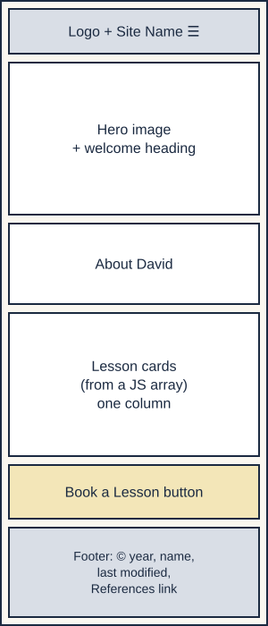
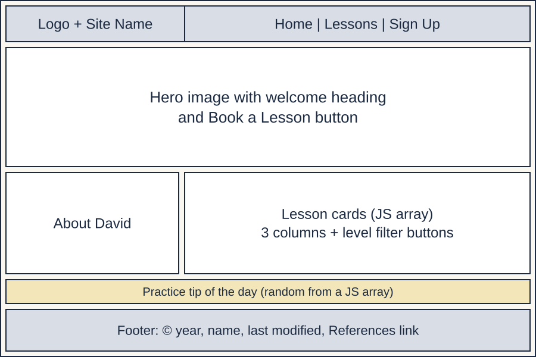

Site Name
David Wilson Keyboard Lessons
- The name tells visitors exactly who is teaching and what is being taught: keyboard and piano lessons with me, David Wilson, in Accra, Ghana.
- Using my own name builds trust with parents and students who already know me through church and choir work.
- Optional domain idea: dwkeyboardlessons.com
Site Purpose
The site is a single place where students and parents can learn about my keyboard lessons and sign up. It will provide:
- Information about me as a keyboard teacher and choirmaster.
- A description of the lesson levels: Beginner, Intermediate, and Church/Hymn Accompaniment.
- Lesson schedules and prices that can be filtered by level.
- Practice tips for students.
- A sign-up form to request a lesson, which remembers how many requests a visitor has made.
Scenarios
Questions that visitors from the target audience (beginners, parents, and church musicians) might ask:
- I have never played a keyboard before. Which lesson should I start with?
- How much do lessons cost, and on which days are they held?
- Can you help me learn to accompany hymns for my church service?
- How do I sign up my child for lessons?
Color Scheme
The colors come from a piano: deep black-blue keys, warm ivory keys, and a gold accent for the trim.
Midnight Navy #1b2a41
Header and footer backgrounds, headings, and links.
Ivory #faf7f0
Page background and text on navy areas.
Piano Gold #c9a227
Accent borders, buttons, and hover effects.
Charcoal #222222
Body paragraph text.
Typography
Playfair Display – used for the site name and all headings.
Nunito – used for paragraphs, navigation, buttons, and form fields.
Wireframes
The home page layout in the mobile view and the wider (desktop) view.

